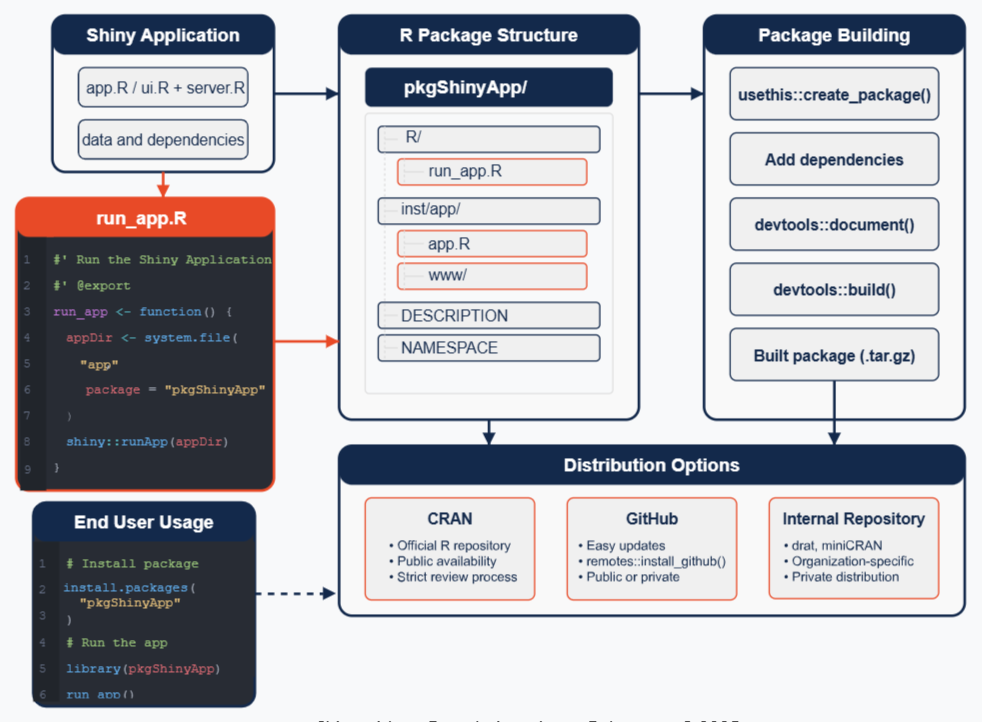
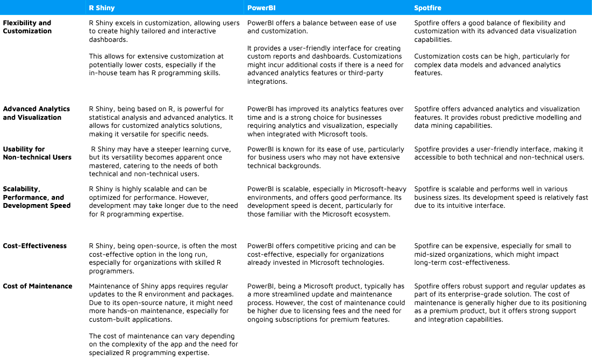
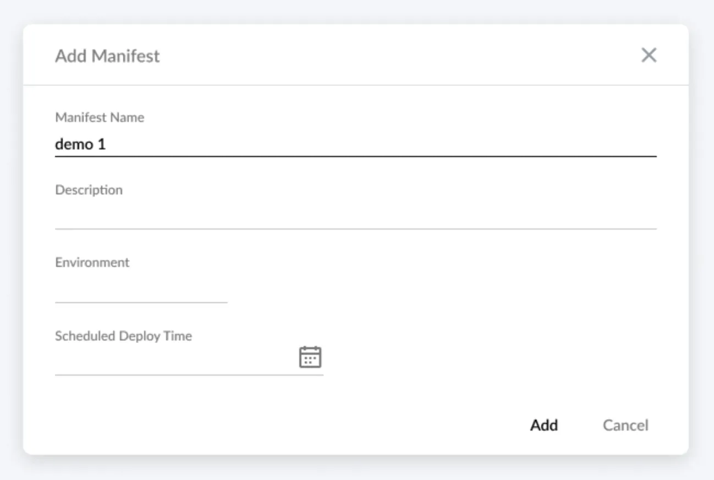

General
Misc
- Packages
- {cicerone} - Provides guided tours to your shiny apps
- {shinyfa} (intro)- Identifies specific render functions, reactive functions, and their inputs, and organizes them into a structured data.frame for easy reference.
- For consultants, new hires, or contributors onboarding to a project, it provides an immediate overview of what the app is doing, and where.
- Resources
- RStudio https://shiny.rstudio.com/tutorial/
- Hadley ebook https://mastering-shiny.org/
- Engineering Production-Grade Shiny Apps - {golem} book
- Adv. UI ebook https://unleash-shiny.rinterface.com/
- Simple app packaged, modules, etc.
- Examples and templates for various usecases (link)
- Thread: Hadley bluesky thread where many people discuss their project layouts
- Most seem to use multiple repos per project where each repo is a package
- Appsilon’s R Shiny: The Definitive Implementation Guide
- Appsilon’s Shiny for Python: The Ultimate Guide by Appsilon
- Tools
- Posit Shiny AI Assistant - Sends prompts to Anthropic Claude 3.5 Sonnet (i.e. not private)
- Ploomber AI Editor
- Can generate Shiny and Streamlit code from text or image
- Video snippet
- Packaging Apps (source)
- Resources
- Shiny App-Packages: Getting your app into an R package
- Thread: Hadley bluesky thread where many people discuss their project layouts
- Most seem to use multiple repos per project where each repo is a package
- Advantages
- Version
- Documentation integration
- Easy distribution to R users
- Limitations
- Requires R knowledge
- Limited to R ecosystem
- Requires R installation
- Resources
- Run a github shiny project locally:
shiny::runGitHub('repo-name', 'account-name') - Shiny has native drilldown capability through
showModal(See Improving Shiny app interactivity and performance with ggiraph) - A common source of poor Shiny performance and maintainability is placing a large amount of logic within a single reactive statement such as an
observe()- Instead of adding a bunch of
renderPlotsto anobserve(), liberally use reactive variables and your code becomes much cleaner, faster, and more maintainable
- Instead of adding a bunch of
- Options
options(shiny.autoreload = TRUE)before runningshiny::runApp(appDir = "./tests", port = 8080)allows you to make changes to app.R and view them almost instantaeously in the viewer. (link)options(shiny.maxRequestSize = 20 * 1024^2)says increase max file upload size to 20MB
- Add paragraphs of text to an app via Markdown (source)
- Create a markdown file, then pass it into your app with
htmltools::includeMarkdown()
- Create a markdown file, then pass it into your app with
- Comparison with other products (article)

{kind=link}
{kind=link}
Workflow
- Dancho’s
- Simple App
- Something bare bones that has ui and server sections
- Could be a company or personal template or the “Hello, World” app with slider and text output
- Better App
- Add images (e.g. navbar logo, splash page background)
- Adjust layout (add sidebar, main panel, etc. to UI)
- Add blank cards (pill, tab, etc.) which will later be filled with charts, tables, etc.
- Titles (navbar, side bar, main panel, etc.)
- Use Bootstrap 5 and style.css files (style navbar, titles, etc.)
- Placeholder App
- Integrate analysis into the app
- Make cards look professional
- Use widgets to make interactive visualizations (charts, tables)
- Reactive App
- Make all calculations and events reactive
- i.e user input changes output (e.g. data values/calculations that go into the charts, tables, etc.)
- This is the basic working application
- Make all calculations and events reactive
- Final Product
- Feature examples
- Add full data ingestion
- Add search
- Add additional inputs and calculations (i.e. more analysis)
- Create modular code (utils directory)
- Code gets long for more complicated apps. Modularizing it makes it more readable and easier to maintain
- Make output downloadable into a report
- Feature examples
- Simple App
- Aetna Insurance
- Notes from Q&A Shatrunjai Singh | R in Insurance | RStudio
- RStudio Connect
- production & dev “version” (branches?)
- Steps
- Build minimum viable product (MVP)
- Upload to dev branch
- Perform Test & Learn for about a month
- Give it to a small number of ppl
- Have them use it and get feedback
- Create “dev2” app
- Apply fixes
- Add most critical elements according to the feedback
- Give to a different, slightly larger group of people
- Looking for issues, bugs, etc.
- Once satisfied that all major kinks are worked out, move app to production branch
- Launched to entire company
- For the 1st 6 months, “recalibrate analysis” every 1.5 months
- Recalibrate every 6 months afterwards
- Do packages need updated?
- Do the models need retrained
- Is the app still working as intended?
- If it’s all good, do some code optimization, refactoring, etc.
Prototyping
- Misc
- Packages
- {designer} - Makes the initial generation of a UI wireframe of a shiny application as quick and simple as possible. Good for PoCs. Allows you to drag and drop components.
- {shinyuieditor} - Seems like it’s similar to {designer}
- Also see BizSci video
- Semantic Layer - A business representation of corporate data that helps end users access data autonomously using common business terms. By using common business terms, rather than data language, to access, manipulate, and organize information, a semantic layer simplifies the complexity of business data. Business terms are stored as objects in a semantic layer, which are accessed through business views
- Ask for feedback on each stage and implement changes accordingly
- Infinite Scrolling vs Pagination (article with code)
- Infinite scrolling is easier to use on mobile devices and requires fewer “clicks” compared to pagination.
- Might increase user engagement on your page as viewers stay on your website longer; continuously searching for relevant content when they have no particular goal in mind.
- Infinite scrolling is easier to use on mobile devices and requires fewer “clicks” compared to pagination.
- Packages
- Understand the Complexity
- What is the functionality that needs to be addressed?
- e.g. An app that does Risk Identification, Demand Simulation, and Sales Visualization
- What are the complexities inherent in each of those functionalities?
- e.g. The data used by the app covers multiple markets, and each market has its own peculiarities in production and supply chains.
- e.g. What are the metrics that are used in Risk Identification?
- Conduct a series of preliminary meetings with stakeholders/domain experts to update functionality requirements and collect differences.
- Use these meetings to produce a document with the functionalities and complexities that can be referred to throughout the project.
- What is the functionality that needs to be addressed?
- Map the user’s workflow
- Why?
- Seeing how the users accomplish the task now will give you a better understanding of the whole process or even point to a competitive advantage.
- Maybe the existing tools and processes have some inefficiencies that your app can address? Identify these pain points.
- Or maybe some parts of the current solution can be reused to speed up user adoption and onboarding?
- Questions
- What is the main reason for building the app?
- Who are the users?
- What will the users accomplish with your app? What are their business goals?
- How have they done it so far? Are they already used to any particular tools or workflows?
- This can help you identify which functionality should be at the entry point of the app.
- e.g. If Risk Identification is typically the first step of the user’s workflow, it should be the first feature the user sees, or it should be prominently displayed and easily accessed.
- Why?
- For Analysis apps
- Include at least a few toy datasets so people know what the data is supposed to look like and be able to play around with the app
- Add a description card for each toy data set
- Add tool-tips for input ui text
- Add descriptions/instructions to the top of each page
- Include at least a few toy datasets so people know what the data is supposed to look like and be able to play around with the app
- Apps are for users (not you)
- What decision does the user make by visiting this app?
- What does the user learn throughout each stage of their workflow?
- How do they interact with your app to do this?
- Pay attention to regional mental models
- Think about how you sign documents or read a paper book: the target action, whatever it could be, put your signature or turn the page will always be on the bottom right corner as a logical end
- Typical Western Mental Model for Charts
- Some modern website landing pages use the horizontal direction instead of vertical for scrollytelling or structure (e.g. Kwokyinmak, Royal Oak).
- Example:
- All the fields go left to right so this is designed for a western audience
- The target action is the “Add” button, and for a western audience, that means it should be on the far right of the cancel button. In this UI, it is not.
- Data Visualizations
- What do you want to tell with the data?
- What is the context?
- Who is your audience?
- Along with how you think the functionality should be visualized, you should consider adding a way that matches or is similar to the user’s previous process.
- e.g. You think a bubble chart with a drill-down feature would be idea for Risk Identification, and the user performed this task using a table in her workflow. Consider also including a table.
{kind=link}
{kind=link}
Testing
- Packages
- {shinytest2} - Provides a streamlined toolkit for unit testing Shiny applications and seamlessly integrates with the popular testthat framework for unit testing R code
- {shinytesters} ( Intro) - Makes it easier to test update functions in Shiny packages when using
testthat::testServer
- Can test at any stage of the development process, even before it starts.
- You can use the wireframes or mockups and manually change the “screens” as the user “performs an action” in the app.
- **Do not to leave testing for the last moment. When the app development is finished, rebuilding the UI will be costly.**
- Types
- Unit Tests
- Performance Tests
- In-Depth user interviews
- Sessions with the user where you ask the person to perform several tasks within the tool. This way you can see if there are any recurring problems with navigation or the general ease of use.
- Hallway Tests
- Short version of an in-depth user interview
- Just ask your colleagues to use the app for 5-10 minutes and note their impressions.
- Final Checklist
- Is the app design responsive?
- Does the user know what’s wrong when receiving an error message?
- Is the user well informed about the state of the app, e.g. when waiting for the calculation, is it clear when it will be finished?
- Can the users correctly interpret the data using the visualizations
- Cultural differences among respondents should also be considered. We encountered a problem of interpreting the same information from different perspectives
JS
www- Directiory for images, styles, or JS script. Same directory asapp.RUse a javascript file + library
Example Stylish Pop-Up Notification
JS Script
// JS script; basic toastify notification Shiny.addCustomMessageHandler('notify', function(msg){ Toastify({ text: msg }).showToast(); });Keep in
wwwtoastify.js is a library for some snazzy notifications you can use that pop-up in your browser when a event (e.g. button pushed) has happened.
addCustomMessageHandleris a js function that receives the message from the server- “notify” is the identifer that it listens for
Toastify()takes a JSON formatted list of argsshowToastmethod sends snazzy notification to the user’s browser.
UI and Server
ui <- fluidPage( tags$head( # toastify css dependency tags$link( rel = "stylesheet", type = "text/css", href = "https://cdn.jsdelivr.net/npm/toastify-js/src/toastify.min.css" ), # our script tags$script( type = "text/javascript", src = "script.js" ) ), h1("Notifications"), textInput("text", "Text"), actionButton("show", "Show"), # toastify js dependency tags$script( type = "text/javascript", src = "https://cdn.jsdelivr.net/npm/toastify-js" ) ) server <- function(input, output, session){ observeEvent(input$show, { session$sendCustomMessage( "notify", input$text }) } shinyApp(ui, server)Button is pressed in ui, sends “message” (text, data.frame, etc.) to server, server sends “message” to js script in ui which triggers a notification in the browser.
UI
tags$headincludes:tags$linklinks to the toastify CSS stylesheettags$scriptpoints to the path of the js script and provides the identifier (“type”), “text/javascript”
tags$scriptlinks to the toastify js dependency and also has the identifier, “text/javascript”
Server
ObserveEventlistens for ui input “show” button to be pressedsendCustomMessageis a js function to send a message from the server to the browser- identifier (“type”) = “notify” says which custom handler to use in the js script
Example: DT table and Leaflet (sort of) sync (source)
JS Script (
gomap.js)// When locator icon in datatable is clicked, go to that spot on the map $(document).on("click", ".go-map", function(e) { e.preventDefault(); $el = $(this); var lat = $el.data("lat"); var long = $el.data("long"); var zip = $el.data("zip"); // this one $($("#nav a")[0]).tab("show"); // this one Shiny.onInputChange("goto", { lat: lat, lng: long, zip: zip, // and this one nonce: Math.random() }); });- This example had a few of the lines deleted (indicated in the comments)
UI and Server
# ui -------------- navbarPage("Superzip", id="nav", tabPanel("Interactive map", div(class="outer", tags$head( # Include our custom CSS includeCSS("styles.css"), includeScript("gomap.js") ), ... ... # server ---------------- observe({ if (is.null(input$goto)) return() isolate({ map <- leafletProxy("map") map %>% clearPopups() dist <- 0.5 zip <- input$goto$zip lat <- input$goto$lat lng <- input$goto$lng showZipcodePopup(zip, lat, lng) map %>% fitBounds(lng - dist, lat - dist, lng + dist, lat + dist) }) }) output$ziptable <- DT::renderDataTable({ df <- cleantable %>% filter( Score >= input$minScore, Score <= input$maxScore, is.null(input$states) | State %in% input$states, is.null(input$cities) | City %in% input$cities, is.null(input$zipcodes) | Zipcode %in% input$zipcodes ) %>% mutate(Action = paste('<a class="go-map" href="" data-lat="', Lat, '" data-long="', Long, '" data-zip="', Zipcode, '"><i class="fa fa-crosshairs"></i></a>', sep="")) action <- DT::dataTableAjax(session, df, outputId = "ziptable") DT::datatable(df, options = list(ajax = list(url = action)), escape = FALSE) }) }- Also see this example
Example: Download code from a LLM chat window (source, article)
# Attach a JavaScript snippet to handle the download. # When the download button is clicked, the script extracts the text inside # the chat's <shiny-chat-messages> element, creates a Blob from it, and triggers a download. ui <- tagList( ui, tags$script(HTML(" document.addEventListener('DOMContentLoaded', function() { document.getElementById('downloadChat').addEventListener('click', function() { // Find the chat container by the id you provided to chat_ui() var chatContainer = document.getElementById('chat'); if (!chatContainer) return; // The chat messages are rendered inside the <shiny-chat-messages> element var chatMessages = chatContainer.querySelector('shiny-chat-messages'); if (!chatMessages) return; // Get the visible text (this will strip extra formatting) var text = chatMessages.innerText; // Create a blob and a temporary anchor to trigger download var blob = new Blob([text], { type: 'text/plain' }); var url = URL.createObjectURL(blob); var a = document.createElement('a'); a.href = url; a.download = 'chat.txt'; document.body.appendChild(a); a.click(); document.body.removeChild(a); URL.revokeObjectURL(url); }); }); ")) )
{kind=link}